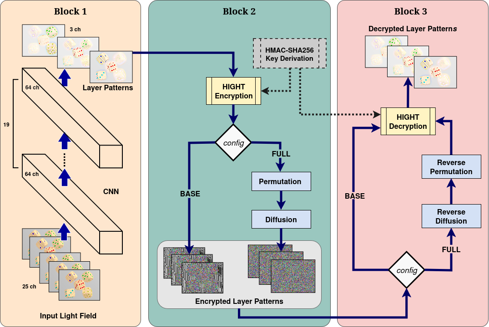
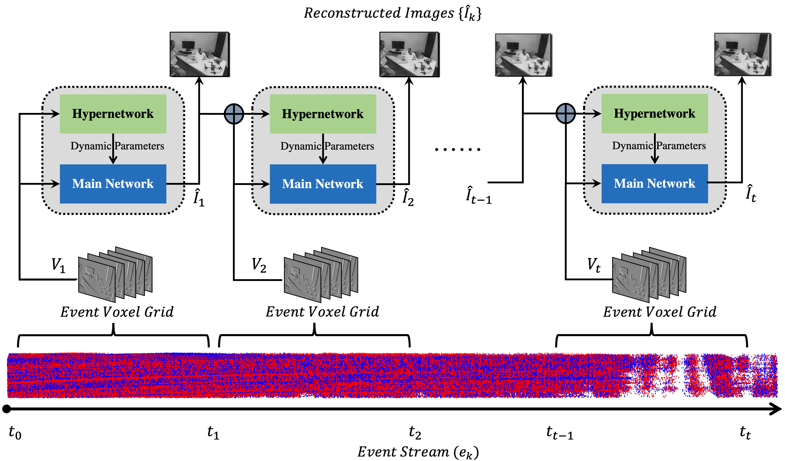
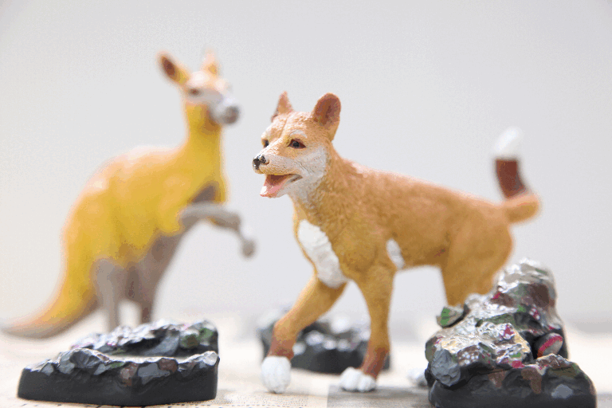
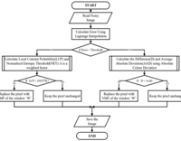
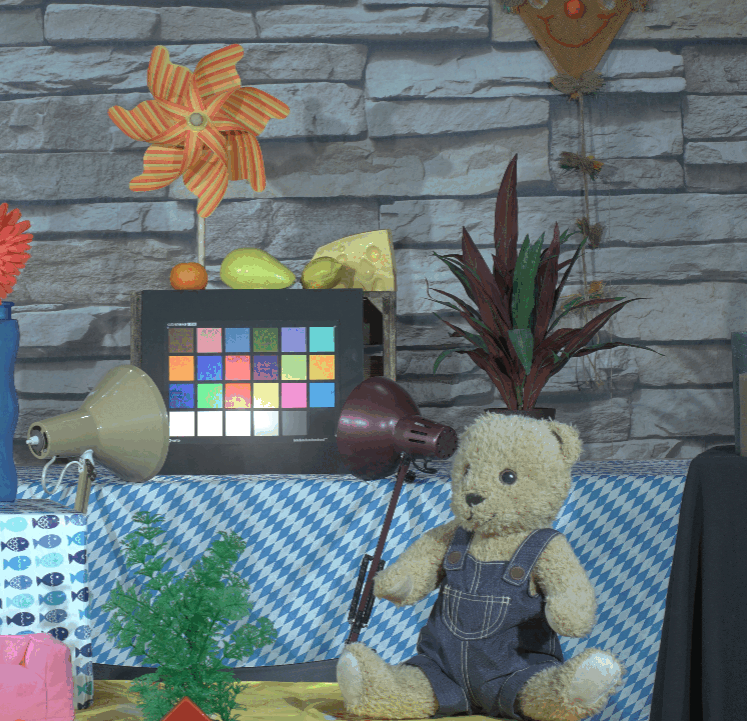
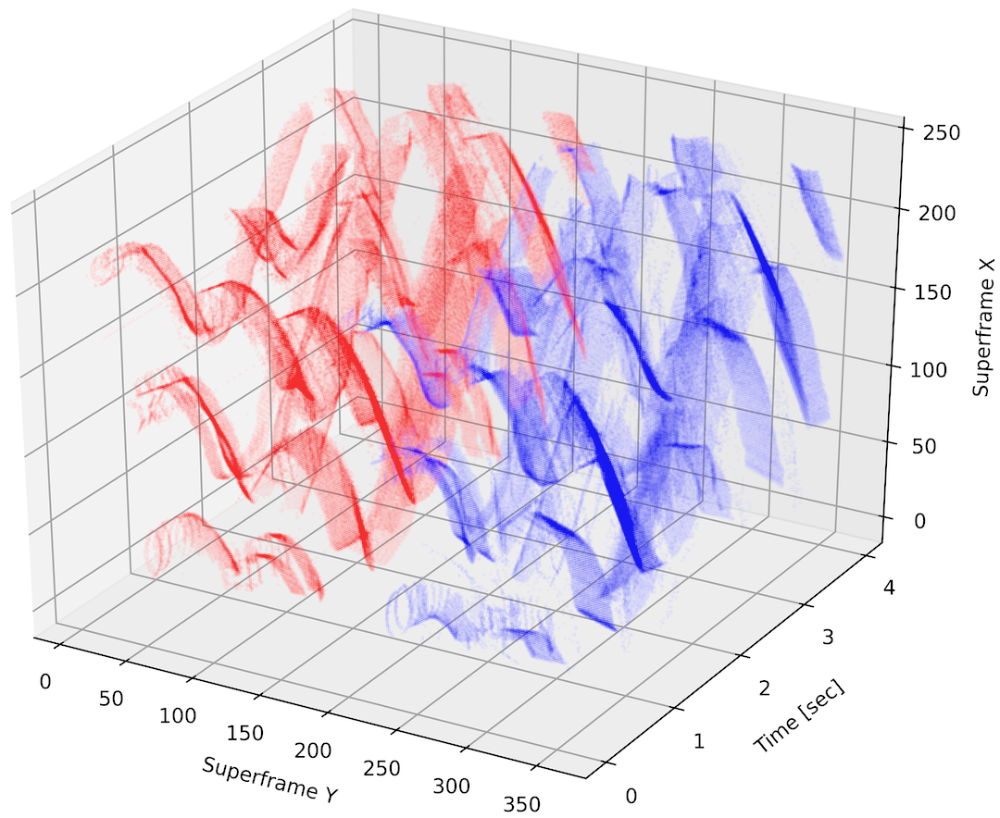

Research Vision
From Capture to Understanding: Advancing Intelligent Visual Perception
Developing methods that transform novel visual sensing into robust visual perception.
My research spans the complete visual information pipeline—from image acquisition and representation to reconstruction, rendering and scene understanding. I develop learning-based algorithms that integrate novel sensing modalities with modern computer vision to enable efficient and robust perception in challenging environments.
About Me
I am a Ph.D. Research Scholar in the Computational Imaging Lab, Department of Electrical Engineering, Indian Institute of Technology Madras, advised by Prof. Kaushik Mitra and Dr. Mansi Sharma. Previously, I received my M.Tech. in VLSI and Embedded Systems from the National Institute of Technology Manipur and my B.E. in Electronics and Communication Engineering from B.M.S. College of Engineering, Bengaluru.
Research & Industrial Experience
IIT Madras & ICMR–National Institute of Epidemiology (ICMR-NIE)
Feb 2026 – Present
Contributing to an interdisciplinary research project on drone-based digital imaging for automated wildlife monitoring. Developing learning-based multimodal computer vision algorithms using synchronized RGB and thermal imagery for robust aerial detection, population counting and behavioural monitoring of Indian Flying Fox colonies.
Samsung Research Institute Bangalore (SRIB)
Jul 2025 – Jan 2026
Designed and developed a video foundation model for video panoptic segmentation, enabling robust spatio-temporal scene understanding across diverse visual environments.
Honours & Awards
ANRF International Travel Support (ITS) Grant, 2025
Institute Half-Time Research Assistantship (HTRA), IIT Madras (2020–2025)
First Rank, M.Tech. in VLSI & Embedded Systems, National Institute of Technology Manipur
Qualified Graduate Aptitude Test in Engineering (GATE), Electronics & Communication Engineering, 2019 and 2020
Selected Research Projects
Learning-Based Event Vision
Mar 2026 – Ongoing
Investigating learning-based methods for event-driven semantic segmentation of dynamic video scenes.
Nov 2024 – Mar 2025 · VCIP 2025
Developed a lossless event compression framework using a voxelized Super Binary Map and Temporal Event Vector with context-adaptive entropy coding.
Jan 2024 – Nov 2024 · JEI 2025
Developed a context-guided recurrent neural network (FastDynamicNet) for efficient event-to-image reconstruction from asynchronous event streams.
Feb 2023 – Aug 2023 · ICVGIP 2023
Proposed a learning-based lossless compression framework for neuromorphic event streams using spatio-temporal representations and entropy coding.
Neural Rendering & 3D Scene Understanding
Jan 2026 – Ongoing
Investigating event-guided NeRF and 3D Gaussian Splatting for novel view synthesis and dynamic scene understanding with panoptic segmentation.
Jul 2025 – Jan 2026 · Samsung Research Internship
Developed a VideoMAE-based foundation model for depth estimation and video panoptic segmentation for robust spatio-temporal scene understanding.
Nov 2024 – Jun 2025 · IEEE Access 2025
Developed an event-guided framework for image deblurring and HDR novel view synthesis using NeRF and 3D Gaussian Splatting.
Computational Light-Field Imaging
Jul 2024 – Nov 2024 · BMVC 2024
Developed a learning-based compression framework for layered light-field displays using Deep Belief Networks and H.265 encoding.
Jul 2024 – Nov 2024 · CICT 2024
Developed a convolutional autoencoder with 4D-DCT perceptual encoding for efficient HDR light-field compression.
Dec 2022 – Mar 2023 · CVPR Workshop 2023
Developed a dynamic light-field codec using coded-aperture acquisition, Dynamic Mode Decomposition and HEVC compression.
Jan 2022 – Aug 2022 · PRL 2022
Developed tensor decomposition techniques for efficient coding and streaming of real-world light fields from focal stacks.
Nov 2020 – Mar 2021 · IC3D 2021
Developed a real-time light-field compression pipeline using tensor sketching, vector quantization and HEVC encoding.
Journals

S. Khaidem, M. Sharma and A. Singh
Journal of Electronic Imaging, 2026.

S. Khaidem, A. Nandakumar, M. Sharma and K. Mitra
IEEE Access 2025

S. Khaidem, R. Jangid and M. Sharma.
Journal of Electronic Imaging 2025

J. Ravishankar, M. Sharma, and S. Khaidem
Pattern Recognition Letters 2022

S. Khaidem, P. Keisham, S. Loitongbam, M. Khumanthem
Journal of Advanced Research in Dynamical and Control Systems 2020
Conferences

S. Khaidem, A. Dharmaraj and M. Sharma
International Conference on Visual Communications and Image Processing (VCIP), Klagenfurt, Austria 2025

S. Khaidem, R. Choudhary, M. Sharma, and B. Sankaranarayanan
IEEE International Conference on Emerging Technologies and Applications (ICETA), IIITM Gwalior 2025

S. Khaidem and M. Sharma
IEEE 8th International Conference on Information and Communication Technology (CICT), IIIT Allahabad 2024

S. Khaidem and M. Sharma
35th British Machine Vision Conference (BMVC), Glasgow, UK 2024

S. Khaidem, A. Nevatia, and M. Sharma
Indian Conference on Computer Vision, Graphics and Image Processing (ICVGIP), IIT Ropar 2023

J. Ravishankar, S. Khaidem, and M. Sharma
IEEE/CVF Conference on Computer Vision and Pattern Recognition Workshop (CVPRW), Vancouver, Canada 2023

J. Ravishankar, M. Sharma, and S. Khaidem
International Conference on 3D Immersion (IC3D), Brussels, Belgium 2021